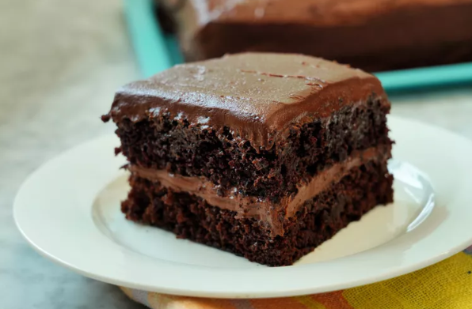

How to Make the Easiest Chocolate Cake From Scratch

No need to reach for a box cake mix anymore when there's a super-easy, no-fuss, no-baking-skills-required, rich, and chocolatey chocolate cake that anyone can bake from scratch. Even Nicole McLaughlin, aka NicoleMcmom, who says she's not much of a baker, was able to nail this recipe like it's no big deal. If she can do it, you can do it.
Of course, the quality of the recipe makes all the difference. Nicole chose a 5-star chocolate cake recipe from Allrecipes with 4,000+ ratings and 3,000+ reviews, practically guaranteeing success right off the bat. And to prove that the best recipes don't have to be complicated, you can make this cake with one bowl and one pan. You don't even need a stand mixer.
Ingredients
- Sugar
- Flour
- Cocoa powder
- Baking powder
- Baking soda
- Salt
- Eggs
- Milk
- Vegetable Oil
- Vanilla extract
- Boiling water
How to prepare
- Preheat the oven to 350 degrees F (175 degrees C). Grease and flour two nine-inch round pans. OR line a half sheet pan with parchment paper and spray with cooking spray if you want to bake a sheet cake.
- In a large bowl, stir together the sugar, flour, cocoa, baking powder, baking soda, and salt. Add the eggs, milk, oil, and vanilla. Mix for 2 minutes on medium speed of mixer. Stir in the boiling water last. The batter will be thin. Pour evenly into the prepared pans.
- Bake 30 to 35 minutes in the preheated oven until you can insert a toothpick into the cake, and remove it dry. OR if you're baking a sheet cake, bake for only 15 minutes. Cool in the pan(s) for 10 minutes, then remove to a wire rack to cool completely.
Return do Main Page